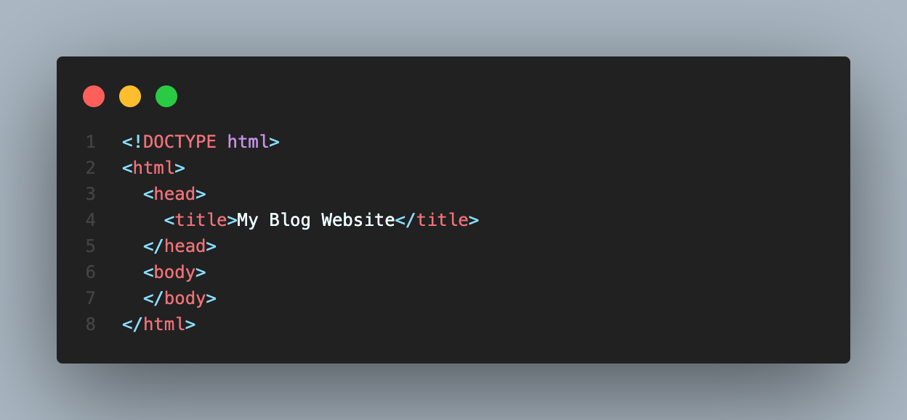
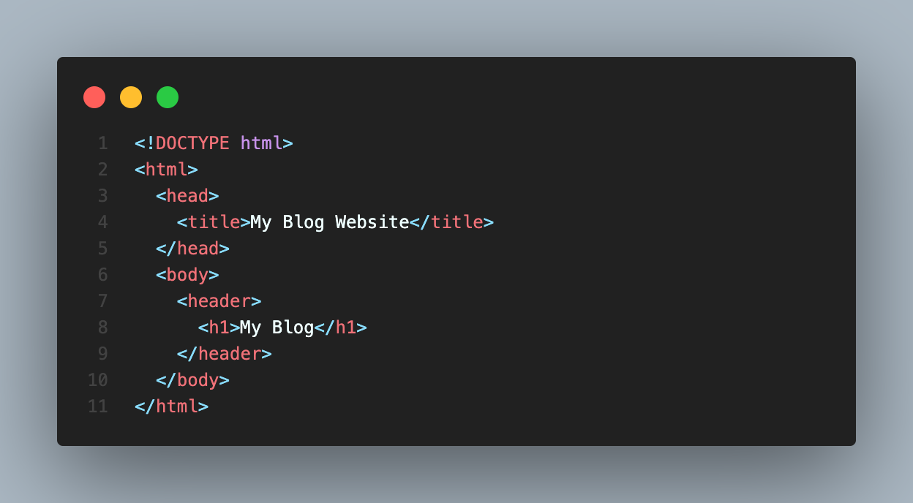
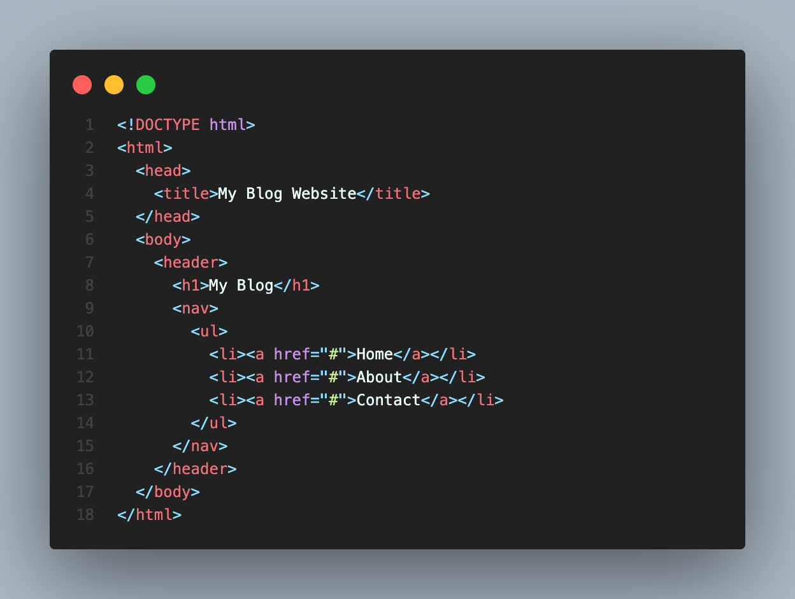
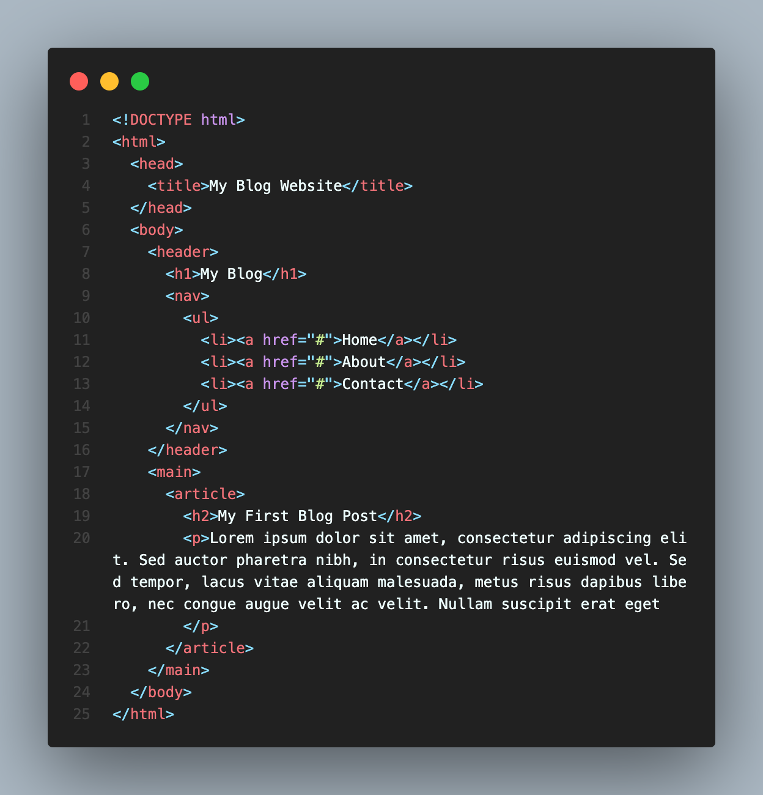

Blogging has become an increasingly popular way to share thoughts, ideas, and experiences with the world. Creating a blog website is not as difficult as you may think. With some basic knowledge of HTML and CSS, you can create a simple blog website in no time. In this blog post, we will guide you through the steps to create a basic blog website using HTML and CSS.
Step 1: Setting up the Basic Structure The first step in creating a blog website is to set up the basic structure. In HTML, you can use tags to create the structure of your website. The most basic structure of a web page includes the HTML, head, and body tags.
In the above code, we have created the basic structure of the web page with the title "My Blog Website". The head tag contains the title of the web page, while the body tag contains the content of the web page.
Step 2: Creating the Header The header of a blog website usually contains the logo or the name of the blog. You can create the header using the HTML header tag.
In the above code, we have created the header of the blog website using the HTML header tag and the h1 tag for the blog name.
Step 3: Creating the Navigation Menu The navigation menu is an important part of a blog website. It helps the users navigate through the website easily. You can create a navigation menu using the HTML nav tag and the unordered list tag ul.
In the above code, we have created a navigation menu with the Home, About, and Contact links.
Step 4: Creating the Main Content The main content of a blog website consists of blog posts. You can create a blog post using the HTML article tag and the h2 tag for the title of the blog post.
